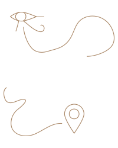
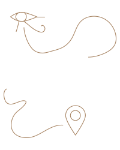

La teca di #egizio2015 si è animata grazie ai soffi di 1.754 persone, che in 5 tappe hanno potuto provare l’emozione di scoprire un reperto nascosto sotto la sabbia.
Guarda il video o accedi alle sezioni con il diario di bordo di ogni tappa: dalla Casa del Quartiere di San Salvario a Galleria San Federico abbiamo raccolto battute, sorrisi e tanto entusiasmo per l’inaugurazione del Nuovo Museo Egizio di Torino.


 
